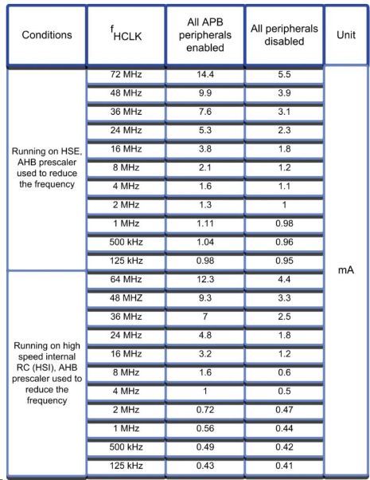
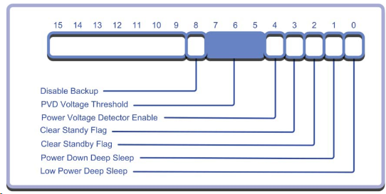
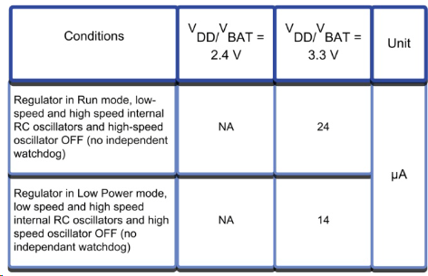
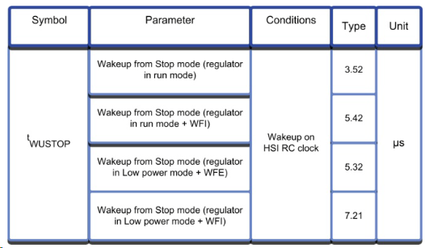
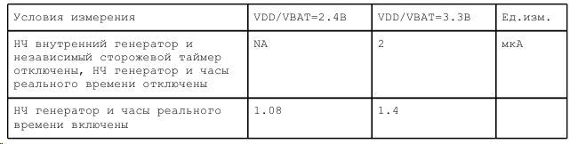
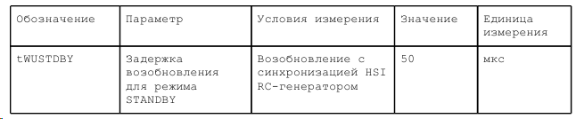
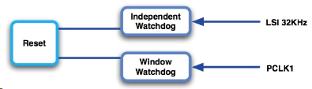
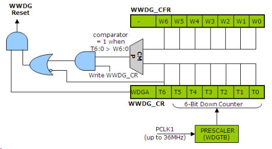
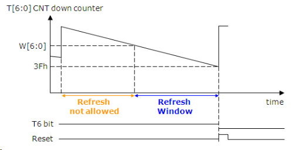

6. ЭКОНОМИЧНЫЕ РЕЖИМЫ РАБОТЫ
МК STM32, будучи высококачественными микроконтроллерами, в дополнение к работе в обычном режиме RUN поддерживают возможность работы в нескольких экономичных режимах. Правильное использование режимов SLEEP, STOP и STANDBY делает возможным реализацию практичных решений с батарейным питанием. МК STM32 объединяет два противоречивых свойства: малое энергопотребление и высокую производительность. При знакомстве с ядром Cortex уже говорилось, что после перехода в экономичный режим работы ЦПУ и УВВ приостанавливают свою работу и потребляют минимальную мощность. При переходе процессора Cortex в экономичный режим работы, он может сигнализировать об этом еще одному внешнему микроконтроллеру генерацией сигнала SLEEPDEEP. Для перехода в экономичный режим работы необходимо выполнить инструкцию WFI или WFE. После выполнения такой инструкции будет введен экономичный режим работы, указанный в регистре управления энергопотреблением. Далее будет дан обзор каждого экономичного режима работы и их сравнение по показателям потребляемого тока и задержки возобновления работы.
Режим RUN
В режиме RUN микроконтроллер STM32 исполняет код программы, поэтому,
энергопотребление максимально.
В данном разделе будут рассмотрены различные способы снижения результирующего энергопотребления в ходе выполнения кода программы. Важно запомнить, что все данные возможности можно использовать динамически. Это означает, что имеется возможность выполнять код программы в маломощной, низкопроизводительной конфигурации, а затем, в ответ на прерывание или программное событие переключиться к более мощной и высокопроизводительной конфигурации.
При обычном использовании, процессор Cortex и большинство УВВ STM32 могут работать на частоте 72 МГц. Работая с максимальным быстродействием, МК потребляет ток более 30 мА. Первым способом его снижения является отключение синхронизации всех неиспользуемых УВВ. Это позволит вычесть энергопотребление всех неиспользуемых частей микроконтроллера. Включение и отключение синхронизации УВВ можно осуществлять динамически через модуль управления сбросом и синхронизации (RCC).
Еще большего снижения энергопотребления можно добиться снижением частоты системной синхронизации. Если работа на высокой частоте не обязательна, блок PLL можно отключить и МК STM32 будет синхронизироваться непосредственно с выхода HSE-генератора. Дальнейшего снижения потребления можно достигнуть переходом с использования HSE- на HSI-генератор. Однако, по сравнению с HSE-, HSI-генератор обладает существенным недостатком - он не столь точен. Еще некоторую часть энергопотребления можно исключить отключением LSI-генератора, если не используется оконный сторожевой таймер и часы реального времени.
Буфер предварительной выборки и режим полуцикла
При работе напрямую от HSE-генератора на максимальной частоте 8МГц, также можно отключить буфер предварительной выборки Flash памяти и активировать режим полуцикла. Вследствие этого, вводятся дополнительные состояния ожидания, но при этом, снижается потребляемый ток в режиме RUN.
При работе с максимальным быстродействием потребляемый ток составляет в районе 34 мА, а при работе на частоте 8 МГц (9.6 DMIPS) он становится менее 1 мА.
Тщательно сконфигурировав работу МК в режиме RUN, можно снизить потребляемый
ток до приблизительно 8.5 мА.
Режим SLEEP
Первая ступень экономичной работы - режим SLEEP. По умолчанию, после выполнения процессором Cortex инструкции WFE или WFI, отключается внутренняя синхронизация и прекращается выполнение кода программы. В режиме SLEEP, остальная часть МК STM32 продолжает работу. Выход из режима SLEEP происходит, когда УВВ генерирует прерывание. Если МК STM32 синхронизируется блоком PLL и HSE-генератором частотой 72 МГц и использует все УВВ, то при переходе в режим SLEEP потребляемый ток снизится до приблизительно 14.4мА. Тем не менее, если выполнить специальную подготовку МК STM32 к переходу в экономичный режим, отключив синхронизацию всех УВВ, кроме тех, что используются для возобновления работы процессора Cortex, и переключившись на синхронизацию от HSI-генератора (частоту которого можно снизить до 1 МГц и даже менее), можно добиться снижения потребляемого тока до приблизительно 0.5 мА.

В маломощных применениях, чтобы добиться минимального энергопотребления, в режим SLEEP необходимо переходить настолько часто, насколько это возможно. На результирующий уровень энергопотребления также влияет задержка, которая необходима микроконтроллеру STM32 для выхода из экономичного режима работы и восстановления исполнения кода программы. На представленных ниже рисунках будет показано, какие задержки необходимы ЦПУ Cortex, который синхронизируется от HSI RC-генератора, для возобновления нормальной работы.
Режим STOP
Микроконтроллер можно настроить на переход в экономичный режим STOP. Для этого необходимо установить бит SLEEPDEEP в регистре управления энергопотреблением ядра Cortex и сбросить бит Power Down Deep Sleep (PDDS) в регистре управления энергопотреблением МК STM32.

После завершения конфигурации режима STOP, выполнение инструкции WFI или WFE приведет к остановке процессора Cortex и отключению HSI- и HSE-генераторов. Флэш-память, статическое ОЗУ и УВВ остаются запитанными, поэтому, состояние МК STM32 сберегается. Также как и в случае с режимом SLEEP, выход из режима STOP возможен путем генерации прерывания УВВ. Однако в режиме STOP синхронизация всех УВВ отключена, за исключением контроллера внешних прерываний. Таким образом, выход из режима STOP возможен при изменении состояния любой из линии ввода-вывода. Кроме того, у контроллера внешних прерываний имеется одна линия, которая может, как запрашивать, так и генерировать прерывание по достижении заданного времени часами реального времени. Поскольку у часов реального времени имеется отдельный генератор (LSI или LSE), то они могут использоваться для генерации периодических прерываний для вывода МК STM32 из режима STOP.
После перехода МК STM32 в режим STOP его потребляемый ток снижается с миллиампер, потребляемых в режиме RUN, до приблизительно 24 мкА. Дальнейшего снижения энергопотребления можно добиться переводом внутреннего генератора в специальный экономичный режим работы. Для этого необходимо установить бит LPDS в регистре управления энергопотреблением МК STM32. Если при переходе в режим STOP данный бит был установлен, то потребляемый ток снизится до 14 мкА. Если используются часы реального времени, то потребляемый ток увеличится на 1.4 мкА.


Задержка возобновления при выходе из режима STOP в худшем случае составит 5.5 мкс, если стабилизатор оставался в полностью активном состоянии, и 7.3 мкс, если стабилизатор переводился в экономичный режим работы.
Режим STANDBY
МК STM32 можно настроить на работу в режиме STANDBY, если установить бит SLEEPDEEP в регистре управления энергопотреблением ядра Cortex и установить бит Power Down Deep Sleep в одноименном регистре МК STM32. После этого выполнение инструкции WFI или WFE приведет к переводу МК STM32 в режим с наименьшим энергопотреблением. В режиме STANDBY МК STM32 абсолютно полностью бездействует. Отключены внутренний стабилизатор напряжения и HSE- и HSI-генераторы. В этом режиме МК STM32 потребляет ток всего лишь 2 мкА.
В режиме STANDBY потребляемый ток равен 2 мкА, а задержка возобновления составляет 50 мкс.


Выход из режима STANDBY возможен по прерыванию часов реального времени (достижение заданного времени) точно также как и при выходе из режима STOP. Кроме того, возобновление возможно через внешний вывод сброса МК STM32 или с помощью независимого сторожевого таймера. Выход из режима STANDBY также возможен по нарастающему фронту на линии 0 порта А. Данный вывод можно настроить, как вывод возобновления WKUP путем установки бита EWUP в регистре управления энергопотреблением и статуса. Поскольку режим STANDBY самый маломощный, то и выход из него осуществляется дольше всего: задержка возобновления исполнения инструкций составляет около 50 мкс. После перехода в режим STANDBY содержимое статического ОЗУ, регистров ядра Cortex и МК STM32 теряется. Выход из режима STANDBY практически идентичен программному сбросу.
Потребляемый ток области с резервированием питания
В область с резервированием питания входят ОЗУ и часы реального времени. Подача питания на них сохраняется во всех экономичных режимах работы. Их потребляемый ток ток при напряжении питания 3.3В составляет около 1.4 мкА.
Возможность отладки в экономичных режимах
Отладка традиционных микроконтроллерных систем, в которых используются экономичные режимы работы, может оказаться затрудненной. Это связано с тем, что после перехода в экономичный режим микроконтроллер перестает взаимодействовать с отладчиком. Вследствие этого, отладчик выдает сообщения об ошибке или перестает работать. Во избежание этого, у МК STM32 предусмотрена возможность сохранения в работе HSI-генератора в качестве источника синхронизации встроенной отладочной системы CoreSight даже после перевода МК в экономичный режим работы. Расширенные возможности отладки МК STM32 настраиваются через регистр DBG_MCU.
7. ВОЗМОЖНОСТИ БЕЗОПАСНОЙ РАБОТЫ
Микроконтроллеры STM32 поддерживают ряд возможностей, направленных на выявление некорректного выполнения кода программы и неправильного поведения микроконтроллера в целом. Чтобы исключить возможность работы микроконтроллера от ненадежного источника питания, у МК STM32 предусмотрена встроенная схема, которая переводит его в состояние сброса, если напряжение VDD будет ниже минимально-допустимого значения. Кроме того, в МК интегрирована программируемая схема контроля напряжения, которая еще раньше позволяет выявить проблемы с питанием.
После выявления нарушения питания эта схема генерирует прерывание, позволяющее перевести ИС в безопасное состояние. В структуре системы синхронизации МК предусмотрены элементы контроля HSE-генератора. В случае выявления нарушений в его работе, МК автоматически переключится на работу от HSI-генератора. Корректность выполнения программы можно контролировать с помощью двух встроенных сторожевых таймеров. Один из них - оконный сторожевой таймер, который необходимо обновлять с определенной частотой. Другой - независимый сторожевой таймер, который синхронизируется отдельным генератором, несвязанным с основной системной синхронизацией. Кроме того, встроенная Flash память поддерживает возможность хранения данных в течение 30 лет при температуре 85╟С, что является лучшим в своем классе показателем хранения данных для микроконтроллера общего назначения.
Перечисленные возможности по обеспечению безопасной работы МК неприемлемы для использования в оборудовании, к которому предъявляются максимально-высокие требования безопасности (в таком оборудовании элементы, отвечающие за контроль программного обеспечения, как например, сторожевой таймер должны быть отдельными внешними устройствами). Тем не менее, микроконтроллеры STM32 позволяют разрабатывать надежные самокорректирующие системы с использованием способов, применяющихся в критичных к безопасности авиационных и автомобильных системах, но с использованием чрезвычайно простых схемных решений. Благодаря этому, возможно создание гораздо более надежной и качественной недорогой и простой электронной техники.
Управление сбросом
У МК STM32, помимо внешней линии сброса, имеется множество источников сброса. Сброс МК STM32 может быть выполнен встроенными сторожевыми таймерами, программно через GPIO, встроенными схемами сброса при подаче/отключении и снижении ниже допустимого уровня напряжения питания. В случае генерации сброса устанавливаются соответствующие флаги в регистре управления и статуса RCC, т.о. опросом этих флагов можно определить причину, вызвавшую сброс микроконтроллера. Состояние данных флагов сохраняется до следующего сброса при подаче питания или до записи лог. 1 в бит стирания причины сброса.
Контроль питания
Имеется специальный блок для мониторинга питания, называемый блоком контроля напряжения питания (блок PVD). Блок PVD поддерживает возможность программирования порога срабатывания в диапазоне от 2.2 до 2.9В с шагом 0.1В. Этот порог срабатывания задается в регистре управления энергопотреблением.
Выход блока PVD связан с 16-ой линией блока внешних прерываний. Поскольку линии внешних прерываний могут реагировать на нарастающий, падающий или нарастающий и падающий фронты, то блок PVD можно использовать для генерации прерывания при выполнении условий превышения или понижения напряжения.
Защищенная система синхронизации
В большинстве применений МК STM32 в качестве основной системной синхронизации процессора Cortex и УВВ STM32 выступает внешний кварцевый резонатор, подключенный к выводам HSE-генератора. В структуре системы синхронизации предусмотрен специальный блок CSS, который контролирует внешний сигнал. В случае если этот блок обнаружит отказ кварцевого резонатора, МК переключится на аварийную синхронизацию от внутреннего генератора частоты 8 МГц.
Для активизации блока CSS необходимо установить соответствующий бит в регистре
управления RCC.
У блока CSS имеется линия прерывания, которая связана с прерыванием по экстренному отключению расширенного таймера 1, в свою очередь соединенной с линией немаскируемого прерывания GPIO. Этим гарантируется незамедлительный переход PWM-выходов таймера в предварительно-запрограммированное безопасное состояние в случае отказа основного генератора.
Таким образом, если процессор Cortex теряет управление над PWM-выходами, их работа и связанной с ними внешней схемы блокируется. Даная функция особенно важно в устройствах управления электродвигателями.
Watch Dogs
В МК STM32 входят два отдельных сторожевых таймера. Независимый сторожевой таймер полностью отделен от основной системы МК STM32. Он расположен в домене с резервированием питания и синхронизируется встроенным низкочастотным генератором (LSI). Оконный сторожевой таймер является частью основной системы МК STM32 и связан с сигналом синхронизации первой шины УВВ. Оба сторожевых таймера поддерживают возможность раздельного включения/отключения и могут использоваться одновременно.

Оконный сторожевой таймер
Оконный сторожевой таймер является расширенной версией традиционного встраиваемого сторожевого таймера. После активизации, сторожевой таймер начинает счет в обратном направлении и генерирует сброс при изменении состояния счетчика с 0x40 на 0x3F, т.е. когда сбрасывается бит T6.


Кроме того, в конфигурационном регистре оконного сторожевого таймера предусмотрена возможность задания верхней границы счета. Если во время программного обновления содержимого счетчика сторожевого таймера, его фактическое значение окажется больше заданного, тоже генерируется сброс. Следовательно, сторожевой таймер выделяет программе строго ограниченное время на обновление содержимого счетчика, что позволяет быть уверенным не только в факте выполнения кода программы и во временных характеристиках его выполнения.
Оконный сторожевой таймер представляет собой 6-битный вычитающий счетчик, который синхронизируется сигналом PCLK1 через 12-битный предделитель (делит частоту PCLK1 на 4096). У предделителя имеется 2 дополнительных бита, которые может запрограммировать пользователь для дальнейшего деления частоты на 1, 2, 4 или 8. Эти биты находятся в 6 и 7 разрядах регистра управления.
Таким образом, период срабатывания оконного сторожевого таймера определяется по выражению:
Twwdg = Tpclk1 x 4096 x 2^(WDGTB) x (перезагружаемое значение + 1)
Если Pclk1 имеет максимальное значение 36 МГц, минимальный период срабатывания сторожевого таймера составит 910 мкс, а максимальный - 58.25 мс.
По завершении настройки оконного сторожевого таймера, его работу можно разрешить установкой соответствующего бита в регистре управления. После разрешения, остановить работу сторожевого таймера можно только сбросом - программно это сделать невозможно.
Независимый сторожевой таймер
Независимый сторожевой таймер синхронизируется собственным генератором, который не связан
с основной синхронизацией МК STM32. Независимый сторожевой таймер расположен в домене с питанием VDD, которое остается активным в режимах STOP и STANDBY.
Независимый сторожевой таймер представляет собой 12-битный вычитающий счетчик, который генерирует сигнал сброса при переходе через нулевое значение. Счетчик синхронизируется от отдельного внутреннего низкочастотного генератора через 8-битный предделитель.
Номинальная частота LSI-генератора равна 32.768 кГц, но на практике она может варьироваться в пределах 30-60 кГц. Для инициализации сторожевого таймера вначале необходимо настроить регистр предделителя, исходя из того, что коэффициент деления частоты LSI-генератора, который может лежать в пределах 4-256, равен 2 в степени числа, записываемого в регистр предделиетеля значения. Минимальный период срабатывания независимого сторожевого таймера составляет 0.1мс, а максимальный - свыше 26 секунд. Для задания периода срабатывания необходимо запрограммировать регистр перезагрузки.
Для автоматической или программной конфигурации независимого сторожевого таймера может быть задействован небольшой информационный блок во Flash памяти, состоящей из нескольких опциональных байт. Для запуска независимого сторожевого таймера при программном управлении необходимо записать 0xCCCC в регистр ключа. После этого, счет начнется в обратном направлении со значения 0xFFF. Для обновления сторожевого таймера в регистр ключа необходимо записать 0xAAAA. Это приведет к записи заданного перезагружаемого значения в регистр вычитающего счетчика.
Обычно, отлаживать программу микроконтроллеру с активным сторожевым таймером очень сложно. Если ЦПУ окажется остановленным, то и обновлять сторожевой таймер будет некому. В итоге, произойдет его срабатывание и будет выполнен сброс микроконтроллера, который нарушит отладочную сессию. Во избежание этого, разработчики обычно на время отладки отключают сторожевой таймер. Но такой подход, в свою очередь, затрудняет тестирование и испытание функции обновления сторожевого таймера. У МК STM32 в регистре MCUDBG предусмотрена возможность настройки отключения независимого и отдельного сторожевых таймеров на время приостановки ЦПУ, выполненной встроенной отладочной системой CoreSight. Благодаря этому, появляется возможность пошагового выполнения кода программы даже с активным сторожевым таймером.
Особенности GPIO
Встроенные УВВ тоже имеют ряд возможностей, направленных на обеспечение безопасной работы МК STM32.
Блокировка конфигурации ПВВ
Во время инициализации портов ввода-вывода каждая их линия настраивается на ввод или на вывод. По завершении настройки, конфигурационные регистры ПВВ можно заблокировать. Это поможет предотвратить возможность дальнейших непредсказуемых изменений настроек портов. Блокировку у каждого порта можно выполнить побитно.
Оконный компаратор
У каждого модуля АЦП имеется оконный компаратор, который генерирует прерывание при выходе контролируемого напряжения за заданные верхнюю и нижнюю границы.
Вход экстренного отключения
В устройствах управления электродвигателями может использоваться вход экстренного отключения. В случае воздействия на этот вход или в случае отказа основной синхронизации МК, происходит автоматический перевод противофазных ШИМ-выходов в заранее заданное безопасное состояние.
8. FLASH
Встроенная в МК STM32 Flash память состоит из трех областей. Первая из них - основная Flash память, предназначенная для хранения кода программы. Данная память является 64-битной. Это необходимо для повышения быстродействия считывания инструкций в буфер предварительной выборки. Для выполнения программирования и стирания данная Flash память разделена на 4 тыс. страниц. Память характеризуется износостойкостью 10 тысяч циклов перезаписи и 30-летним хранением данных при температуре 85°C.
Помимо основной памяти программ, также имеется две области меньшего размера: большой информационный блок и малый информационный блок.
Большой информационный блок занимает 2 кбайт Flash памяти и предназначен для хранения запрограммированной производителем программы загрузчика, которая использует для передачи кода программы последовательный интерфейс USART1. Малый информационный блок состоит из шести конфигурационных байт. Они предназначены для определения свойств сброса МК STM32 и управления защитой памяти.
Встроенную Flash память можно обновить под управлением встроенный программы загрузчика, с использованием отладочных средств с интерфейсом JTAG или внутрисистемно с помощью специального набора регистров, называемых контроллером программирования и стирания Flash памяти (FPEC-контроллер). FPEC-контроллер также используется для программирования байт опций в малом информационном блоке.
Сразу после сброса, регистры FPEC-контроллера защищены от записи. Чтобы их разблокировать, необходимо выполнить запись специальной последовательности чисел в регистр ключа. Запись 0x45670123, а затем 0xCDEF89AB приведет к разблокировке FPEC-контроллера. Если этого не сделать или сделать с ошибкой, FPEC-контроллер останется заблокированным вплоть до следующего сброса. Сразу после разблокировки FPEC-контроллера, появляется возможность стирания и записи основной Flash памяти. В пределах основного блока Flash памяти имеется возможность стирания всей памяти или выбранных 4 тыс. страниц. Для выполнения массового стирания достаточно установить биты массового стирания и старта в регистре управления. Если бит занятости BSY в этом же регистре будет сброшенным, то каждая ячейка основной Flash памяти будет переведена к состоянию 0xFFFF.
Страничное стирание выполняется также просто. Вначале необходимо запрограммировать начальный адрес страницы Flash памяти в регистр адреса, а затем установить биты стирания страницы и старта в регистре управления. Опять-таки, если бит занятости BSY будет сброшенным, то страница будет стерта. Запись новых данных в ячейки Flash памяти можно выполнять только после их стирания. Для выполнения записи необходимо установить бит программирования в регистре управления, а затем выполнить запись полуслова по требуемому адресу. Если адресованная ячейка Flash памяти будет стертой и не защищена от записи, FPEC-контроллер запишет в нее новое значение.
Байты опций
Малый информационный блок содержит восемь программируемых пользователем байт опций.
Четыре байта из них предназначены для управления защитой от записи основной Flash памяти.
Пятый байт предназначен для установки защиты от чтения, которая предотвращает доступ к областям памяти, когда МК находится в отладочном режиме.
Шестой байт необходим для конфигурации сброса и экономичной работы.
Последние два байта - обычные ячейки Flash памяти, которые могут использоваться
по усмотрению пользователя.
Прежде чем выполнить запись байт опций, необходимо разблокировать FPEC-контроллер по описанной выше методике. После этого, необходио разблокировать байты опций записью тех же двух ключей в регистр ключа байт опций. Байты опций используют различные процедуры программирования и стирания основной Flash памяти. Для стирания малого информационного блока необходимо установить бит OPTER в регистре управления, а затем бит STRT. Сигнализирует о завершении стирания малого информационного блока переход в сброшенное состояние бита занятости BSY. Чтобы выполнить программирование байта опций, необходимо установить бит OPTPG в регистре управления Flash памятью и записать полуслово в байт опций. Каждый байт опций хранится в виде полуслова. В младшем байте этого полуслова хранится значение байта опций, а в старшем - его двоичное дополнение. Двоичное дополнение высчитывается автоматически FPEC-контроллером сразу после записи в младший байт полуслова.
Защита от записи
Разрешение защиты от записи Flash памяти осуществляется на постраничной основе. Каждый бит защиты от записи отвечает за разрешение защиты от записи соответствующей ему страницы Flash памяти. Защита от записи отключается стиранием малого информационного блока.
Защита от чтения
После установки защиты от чтения, блокируется возможность чтения из Flash памяти при переходе МК в отладочный режим. Доступ к статическому ОЗУ остается разрешенным, поэтому, код программы можно загружать и исполнять в этой области памяти. Исполняемая в статическом ОЗУ программа имеет возможность отключить защиту от чтения, однако одновременно с этим будет выполнено стирание всей внутренней Flash памяти. Это необходимо для исключения возможности хищения прошивки МК. После активизации защиты от чтения также включается и защита от записи Flash памяти. Это необходимо для исключения возможности несанкционированных изменений в код программы и в частности в таблицу векторов. Защита Flash памяти будет активной, если байт защиты от чтения и его двоичное дополнение будут установлены равными 0xFF. Для снятия защиты необходимо записать полуслово, состоящее из 0xFA и его двоичного дополнения, в байт защиты от чтения.
Конфигурационный байт
Конфигурационный байт содержит три активных бита. Два из них управляют механизмом перехода МК STM32 в режимы STANDBY и STOP. Для каждого из этих режимов можно активизировать генерацию сброса при входе в режим. Это приведет к перенастройке цифровых линий ввода-вывода на ввод, что снизит общее энергопотребление МК STM32. Также будут отключены PLL и внешний генератор, а МК перейдет на синхронизацию от внутреннего высокочастотного RC-генератора. Последний бит конфигурационного байта управляет активностью независимого сторожевого таймера. У него предусмотрено два режима работы: аппаратный, в котором он включается в работу сразу после сброса процессора, и программный, в котором запуск осуществляет программно.